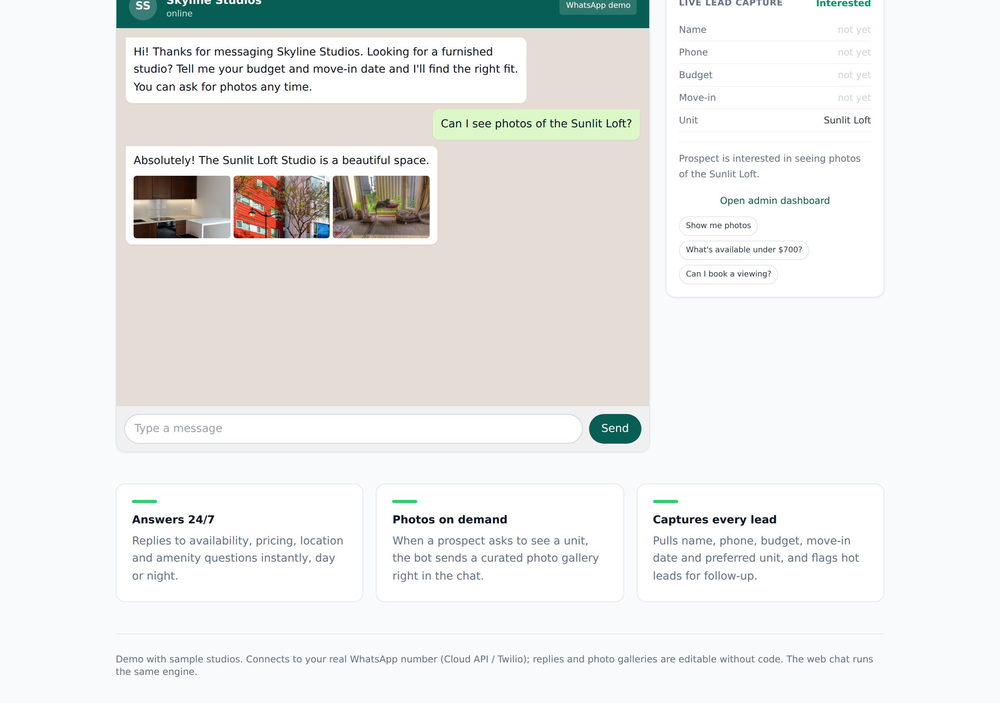

WhatsApp Lead Bot with Photo-on-Demand (Real Estate)¶
Status: Live demo
Demo: studiobot.robiriu-dev.my.id (admin at /admin)

Executive Summary¶
An always-on WhatsApp assistant for a studio-rental business that holds a natural conversation about availability, pricing, location and amenities, and — crucially — sends a property photo gallery the moment a prospect asks to see a unit. It captures every lead (name, phone, budget, move-in date, preferred unit), classifies the status, books viewings, and exposes a dashboard where replies and photo galleries are editable without code. The web chat runs the same engine that connects to the client's WhatsApp number.
How It Works¶
Customer message ─▶ Gemini (KB-grounded reply)
│
reply may end with a token: [PHOTOS:<studioId>]
│
server strips the token, resolves the studio's gallery, returns image URLs
│
chat renders text + the photo gallery inline (WhatsApp style)
│
separate JSON-mode call extracts/updates the lead- Conversation — Gemini answers from the listings knowledge base, never inventing prices or fitment.
- Photo on demand — when the customer asks to see a place, the model emits a
[PHOTOS:<id>]token on the final line; the server parses it, strips it from the reply, and attaches the matching studio's gallery, which the UI renders inline. - Lead capture — a separate extraction call pulls the structured lead and classifies the status (Interested / Viewing Requested / Booked).
- Hot-lead alert — fires when a contact number plus serious intent are captured.
Key Features¶
- Text-plus-photos — the client's emphasised requirement: galleries are delivered in-chat on request, not just plain text.
- Knowledge-base grounding — availability, pricing, size and amenities come only from the listings.
- Lead capture and status — name, phone, budget, move-in date, preferred unit, with status classification and a follow-up flag.
- Editable galleries and replies — an admin tab shows the studios and galleries, demonstrating non-technical updates (or via a Google Sheet in the full build).
- Channel-agnostic — the same engine connects to WhatsApp Business (Cloud API) or Twilio.
Technology Stack¶
| Layer | Technology |
|---|---|
| LLM | Gemini 2.5 Flash via Vertex AI |
| Photo-on-demand | Model-emitted [PHOTOS:id] token resolved to a gallery server-side |
| Lead extraction | Separate JSON-mode call with schema and merge |
| Frontend / API | Next.js 15 (App Router), TypeScript, Tailwind CSS (WhatsApp-styled UI) |
| CRM store | File-backed JSON (swappable for Google Sheets / Airtable) |
| Deployment | pm2 + nginx, Let's Encrypt SSL on a VPS |
Skills Demonstrated¶
- Conversational AI with controlled tool-style side effects (photo delivery via tokens)
- Grounded answering over a structured catalogue
- Lead capture and CRM modelling
- WhatsApp/Twilio channel architecture
- Vertex AI integration via a GCP service account